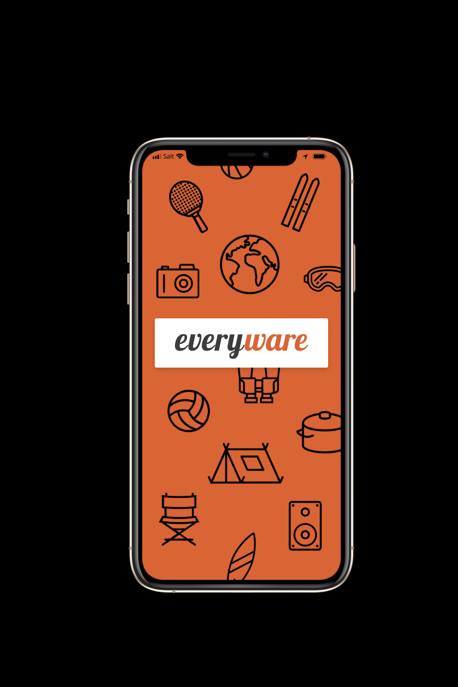

Arbeiten
Lebenslauf
Bocado
Erarbeiten einer digitalen Lernplattform nach der Methode des Human Centered Designs
Everywhere

Erarbeiten einer digitalen Lernplattform nach der Methode des Human Centered Designs